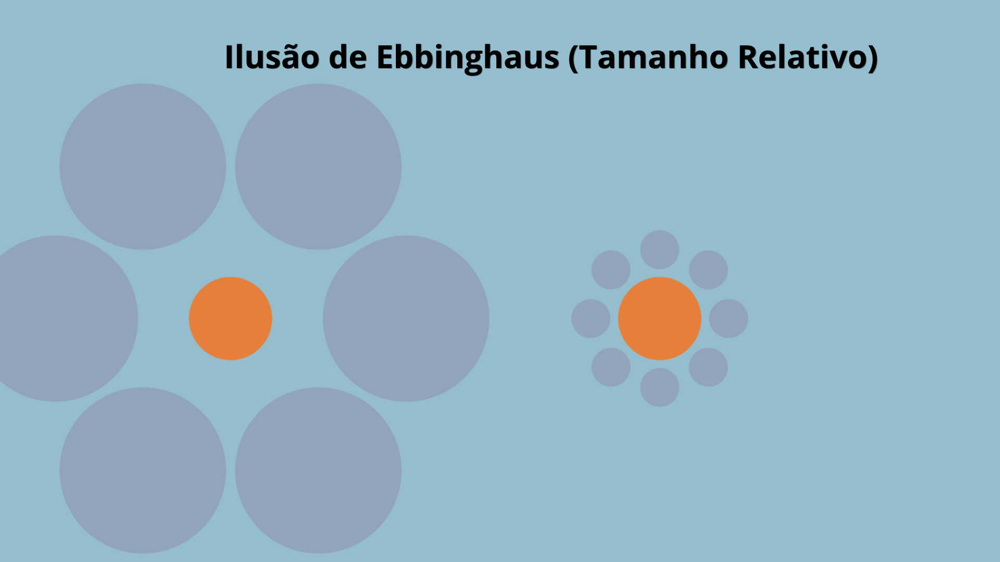
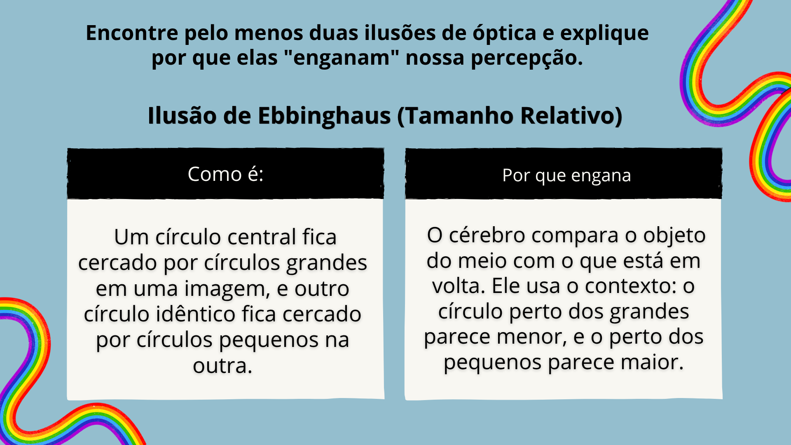
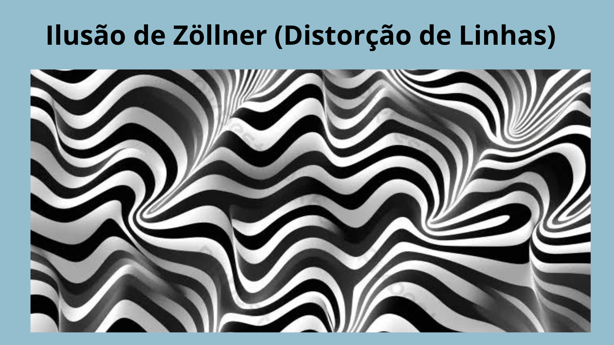
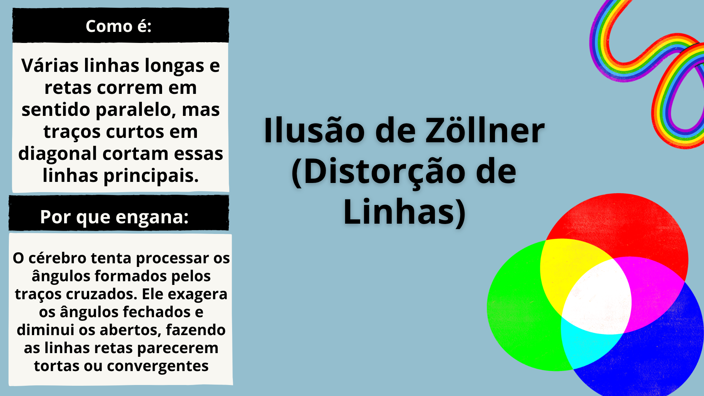
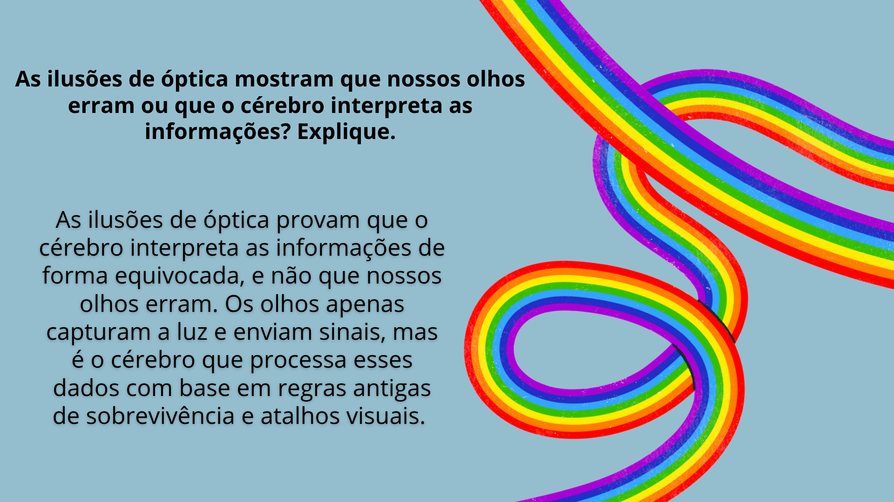

A Ilusões de ótica
Matéria: Tec.Ciencia/Fisica | Data: Agosto de 2026
O que são ilusões de óptica?

Por que nosso cérebro pode interpretar uma imagem de forma diferente da realidade?

Quais fenômenos da luz podem estar envolvidos nessas ilusões?

Ilusão de Ebbinghaus (Tamanho Relativo)

Ilusão de Ebbinghaus (Tamanho Relativo)

Ilusão de Zöllner (Distorção de Linhas)

Ilusão de Zöllner (Distorção de Linhas)

As ilusões de óptica mostram que nossos olhos erram ou que o cérebro interpreta as informações? Explique.
